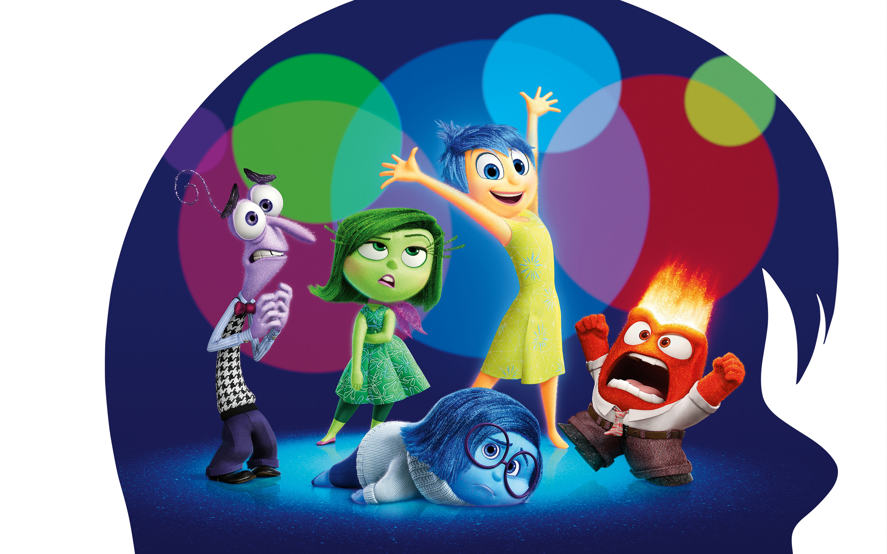

    <div id="wrapper1">
        <!----- Nav Bar ----->
		<nav class="navbar navbar-inverse navbar-fixed-top" >
			<div class="container">

				<div class="navbar-header">
					<span class="navbar-brand">Inside Out</span>
				</div>

				<div id="navbar" class="navbar-collapse collapse">
					<ul class="nav navbar-nav navbar-right">
						<li class="active"><a href="#">Home</a></li>
						<li><a href="#wrapper2">About</a></li>
                        <li><a href="#wrapper3">Gallery</a></li>
					</ul>
				</div>

			</div>
		</nav>

        <!----- Main body: Poster ----->
        <!--<div id="body1" class="col-md-12 parent">
            <div class="top"></div>
            <div class="bottom"></div>-->

            <div id="title" class="parent">
                <!----- Page 1 top ----->
                <div id= "poster" class="col-md-12 parent fadein center">
                    
                    
                    
                </div>

                <!----- Page 1 mid ----->
                <div class="col-md-12">


                </div>
                <!----- Page 1 bottom ----->
                <div id="footer" class="col-md-12 ">


                </div>
            </div>
       <!-- </div>-->
    </div>
<!-------------------------------------------------------------------------->
    <!--- PAGE 2: Main --->
    <div id="wrapper2">

        <!----- Trailer ----->
        <div id="trailer" class="col-md-12 parent">

    <!-- 1. The <iframe> (and video player) will replace this <div> tag. -->
    <iframe id="player" type="text/html" width="640" height="390"
  src="https://www.youtube.com/watch?v=WIDYqBMFzfg"
  frameborder="0"></iframe>

    <script>
      // 2. This code loads the IFrame Player API code asynchronously.
      var tag = document.createElement('script');

      tag.src = "https://www.youtube.com/iframe_api";
      var firstScriptTag = document.getElementsByTagName('script')[0];
      firstScriptTag.parentNode.insertBefore(tag, firstScriptTag);

      // 3. This function creates an <iframe> (and YouTube player)
      //    after the API code downloads.
      var player;
      function onYouTubeIframeAPIReady() {
        player = new YT.Player('player', {
          height: '390',
          width: '640',
          videoId: 'M7lc1UVf-VE',
          events: {
            'onReady': onPlayerReady,
            'onStateChange': onPlayerStateChange
          }
        });
      }

      // 4. The API will call this function when the video player is ready.
      function onPlayerReady(event) {
        event.target.playVideo();
      }

      // 5. The API calls this function when the player's state changes.
      //    The function indicates that when playing a video (state=1),
      //    the player should play for six seconds and then stop.
      var done = false;
      function onPlayerStateChange(event) {
        if (event.data == YT.PlayerState.PLAYING && !done) {
          setTimeout(stopVideo, 6000);
          done = true;
        }
      }
      function stopVideo() {
        player.stopVideo();
      }
    </script>


  <!--      <video width="640" height="360" id="player1" preload="none" class="center">
        <source type="video/youtube" src="https://www.youtube.com/watch?v=WIDYqBMFzfg" />
        </video>
        </div>-->


        <!----- Gallery ----->
        <div class="col-md-12">

        </div>

    </div>
<!-------------------------------------------------------------------------->


        <!------- Scripts ----->
        <!--Twitter API-->
        <script>!function(d,s,id){var js,fjs=d.getElementsByTagName(s)[0],p=/^http:/.test(d.location)?'http':'https';if(!d.getElementById(id)){js=d.createElement(s);js.id=id;js.src=p+'://platform.twitter.com/widgets.js';fjs.parentNode.insertBefore(js,fjs);}}(document, 'script', 'twitter-wjs');</script>

        <!--Facebook start-->

        <script>(function(d, s, id) {
          var js, fjs = d.getElementsByTagName(s)[0];
          if (d.getElementById(id)) return;
          js = d.createElement(s); js.id = id;
          js.src = "//connect.facebook.net/en_GB/sdk.js#xfbml=1&version=v2.4";
          fjs.parentNode.insertBefore(js, fjs);
        }(document, 'script', 'facebook-jssdk'));</script>
        <!--Facebook end-->

        <!--Google Maps -->
        <script src="https://maps.googleapis.com/maps/api/js"></script>

        <!--Bootstrap-->
        <script src="https://maxcdn.bootstrapcdn.com/bootstrap/3.3.5/js/bootstrap.min.js" ></script>

        <!------------------------>
        <script src="https://ajax.googleapis.com/ajax/libs/jquery/1.11.3/jquery.min.js"></script>

        <script src="scripts/scripts.js" ></script>


<!-------------------------------------------------------------------------->
